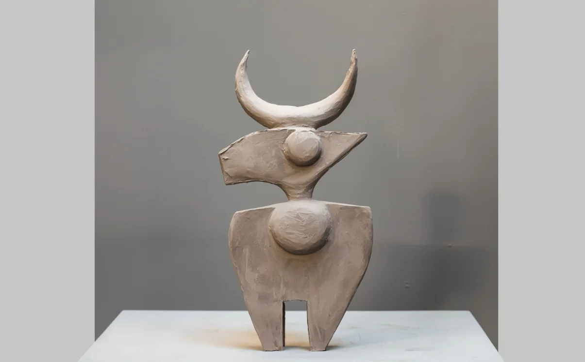
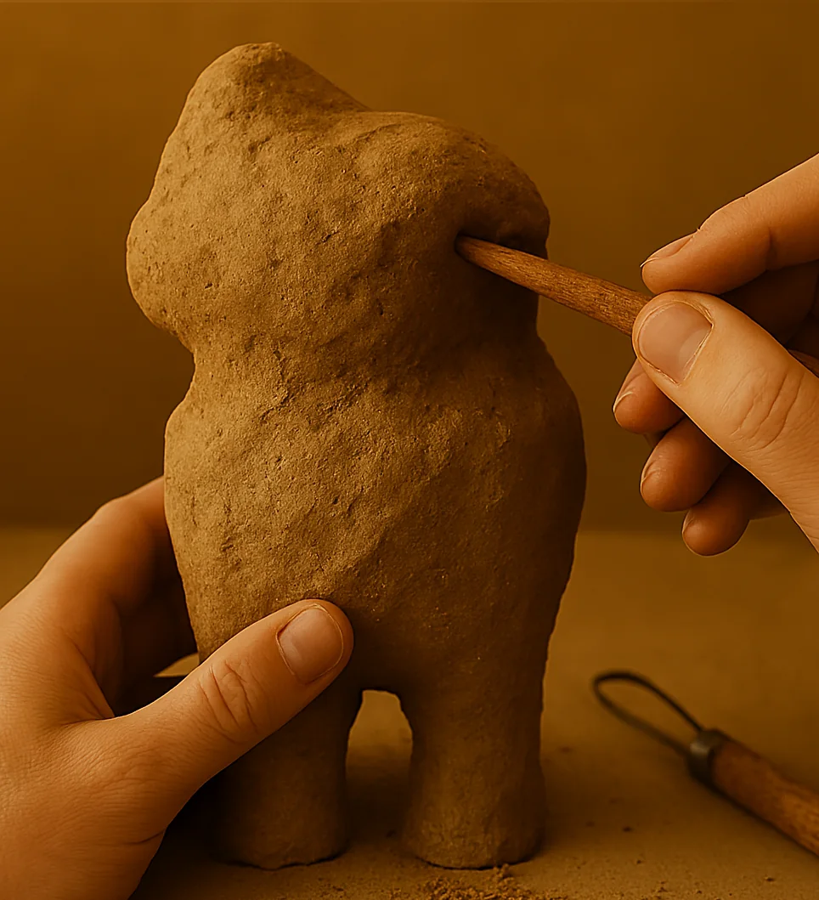
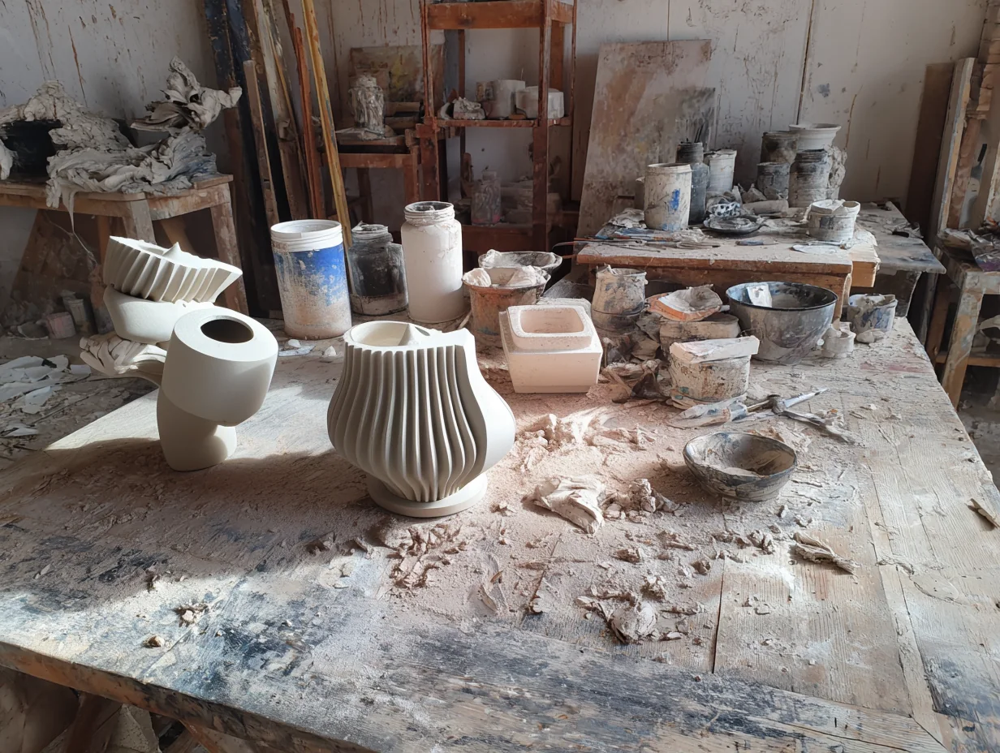

About
I have wandered lands that time forgot, regions erased from the memory of men, and others still untouched by any name.

There I met peoples of vanished rites, civilisations risen from the secret folds of eternity, as if by enchantment, and landscapes suspended out of the world, floating between waking and dream, between light and silence.

From these wanderings, I bring back only fragments: shapes, colors, textures. Some reveal themselves fully, like offerings; others remain elusive, keeping their secrets like timeless sphinxes. Yet each of them preserves the memory of the places and beings I have encountered.

Each creation thus becomes the living testimony of my journeys, the tangible echo of what my eyes have captured and my memory preserved. Into the shaped matter settle the silence of deserts, the murmur of sunken cities, and the slanting light of distant dawns.
To whoever lingers before it, it then extends an invisible thread, and invites them, in turn, to cross the threshold of the unknown.